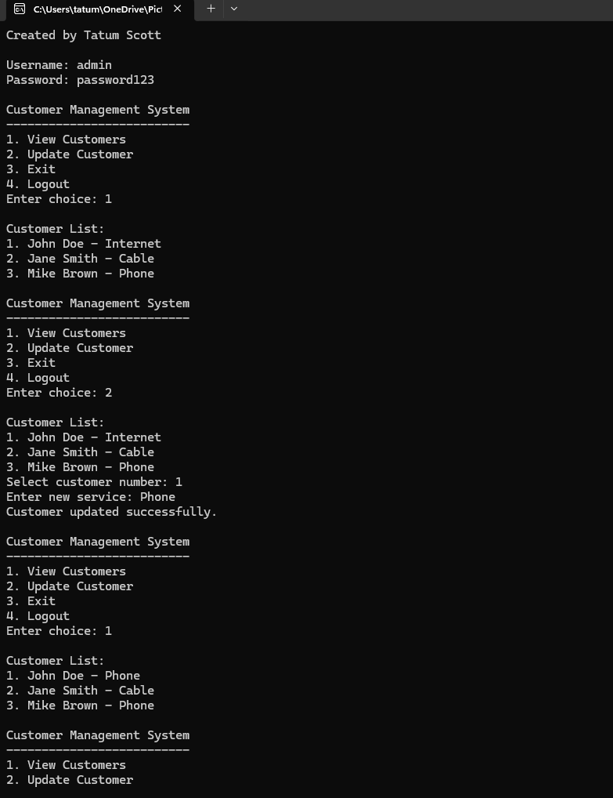

This project focused on improving algorithm efficiency and structure.
The artifact selected for this milestone is a C++ customer management system originally developed earlier in the program. The initial version implemented a basic menu-driven interface with simple authentication and placeholder functionality. While functional, it lacked structured data handling and did not fully demonstrate the use of algorithms or data structures.
This artifact was selected because it provided an opportunity to significantly improve both design and functionality using core computer science concepts.
These enhancements transformed the program into a more scalable and structured application, demonstrating my ability to apply algorithms and data structures effectively.
This project demonstrates my ability to apply algorithmic thinking and appropriate data structures to solve problems. It also reflects my ability to design organized and efficient solutions while improving code readability and maintainability.
Additionally, I incorporated a security mindset by improving authentication logic and limiting login attempts to reduce potential vulnerabilities.
Enhancing this artifact helped me understand the importance of data structures in real-world applications. While the original version functioned correctly, it lacked scalability and structure.
One of the main challenges was restructuring the program while maintaining existing functionality. This required careful debugging and testing to ensure that improvements did not introduce errors.
Overall, this experience strengthened my confidence in applying algorithms and data structures, and reinforced the importance of writing clean, efficient, and secure code.
Overall, this milestone introduced key software development concepts such as data structures, modular programming, and input validation. These improvements made the system more scalable, organized, and user-friendly.
The image below shows the algorithm implementation during Milestone 2, demonstrating improvements in structure and efficiency compared to the original version.
